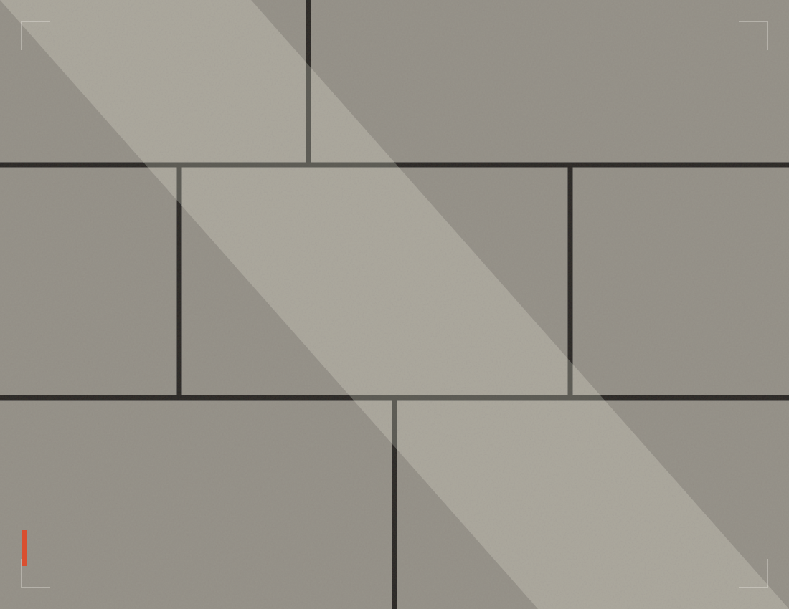

El nombre viene de lo que queda.
Según la descripción pública del anfitrión, la vivienda combina elementos modernos con restos de un antiguo muro de una construcción de más de cien años.
Una memoria que da carácter a la casa, sin dejar de ser un lugar para el presente.
PIEDRA ANTIGUA. VIDA CONTEMPORÁNEA.